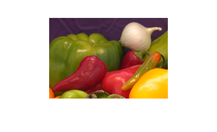
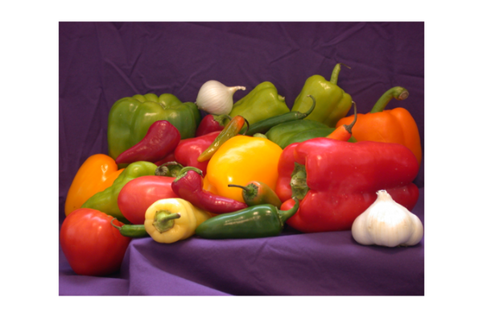
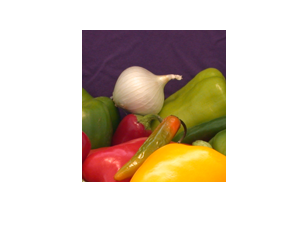
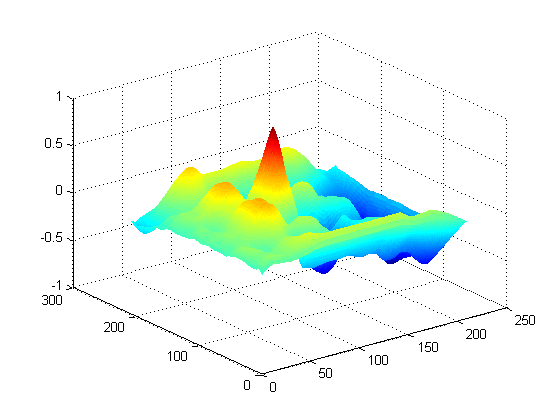
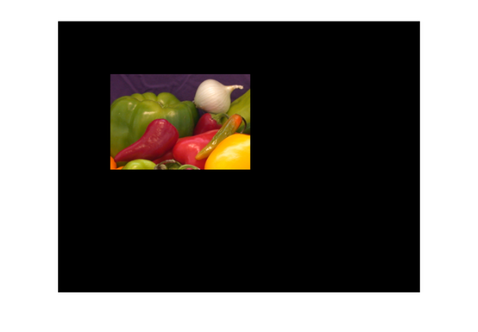
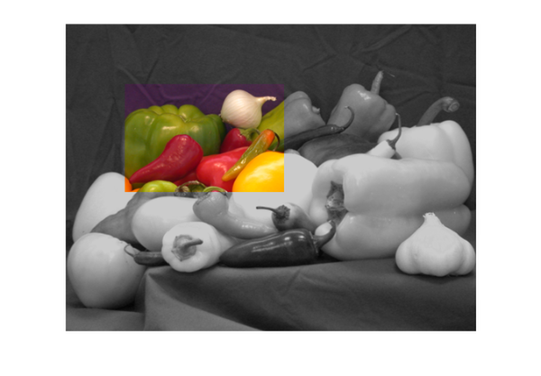

Registering an Image Using Normalized Cross-Correlation
Sometimes one image is a subset of another. Normalized cross-correlation can be used to determine how to register or align the images by translating one of them.
Contents
- Step 1: Read Image
- Step 2: Choose Subregions of Each Image
- Step 3: Do Normalized Cross-Correlation and Find Coordinates of Peak
- Step 4: Find the Total Offset Between the Images
- Step 5: See if the Onion Image was Extracted from the Peppers Image
- Step 6: Pad the Onion Image to the Size of the Peppers Image
- Step 7: Transparently Overlay Onion Image on Peppers Image
Step 1: Read Image
onion = imread('onion.png'); peppers = imread('peppers.png'); imshow(onion) figure, imshow(peppers) 
Step 2: Choose Subregions of Each Image
It is important to choose regions that are similar. The image sub_onion will be the template, and must be smaller than the image sub_peppers. You can get these sub regions using either the non-interactive script below or the interactive script.
% non-interactively rect_onion = [111 33 65 58]; rect_peppers = [163 47 143 151]; sub_onion = imcrop(onion,rect_onion); sub_peppers = imcrop(peppers,rect_peppers); % OR % interactively %[sub_onion,rect_onion] = imcrop(onion); % choose the pepper below the onion %[sub_peppers,rect_peppers] = imcrop(peppers); % choose the whole onion % display sub images figure, imshow(sub_onion) figure, imshow(sub_peppers)
Step 3: Do Normalized Cross-Correlation and Find Coordinates of Peak
Calculate the normalized cross-correlation and display it as a surface plot. The peak of the cross-correlation matrix occurs where the sub_images are best correlated. normxcorr2 only works on grayscale images, so we pass it the red plane of each sub image.
c = normxcorr2(sub_onion(:,:,1),sub_peppers(:,:,1));
figure, surf(c), shading flat
 Step 4: Find the Total Offset Between the Images
The total offset or translation between images depends on the location of the peak in the cross-correlation matrix, and on the size and position of the sub images.
% offset found by correlation [max_c, imax] = max(abs(c(:))); [ypeak, xpeak] = ind2sub(size(c),imax(1)); corr_offset = [(xpeak-size(sub_onion,2)) (ypeak-size(sub_onion,1))]; % relative offset of position of subimages rect_offset = [(rect_peppers(1)-rect_onion(1)) (rect_peppers(2)-rect_onion(2))]; % total offset offset = corr_offset + rect_offset; xoffset = offset(1); yoffset = offset(2);
Step 5: See if the Onion Image was Extracted from the Peppers Image
Figure out where onion falls inside of peppers.
xbegin = round(xoffset+1); xend = round(xoffset+ size(onion,2)); ybegin = round(yoffset+1); yend = round(yoffset+size(onion,1)); % extract region from peppers and compare to onion extracted_onion = peppers(ybegin:yend,xbegin:xend,:); if isequal(onion,extracted_onion) disp('onion.png was extracted from peppers.png') end
onion.png was extracted from peppers.png
Step 6: Pad the Onion Image to the Size of the Peppers Image
Pad the onion image to overlay on peppers, using the offset determined above.
recovered_onion = uint8(zeros(size(peppers))); recovered_onion(ybegin:yend,xbegin:xend,:) = onion; figure, imshow(recovered_onion)
Step 7: Transparently Overlay Onion Image on Peppers Image
Create transparency mask to be opaque for onion and semi-transparent elsewhere.
[m,n,p] = size(peppers); mask = ones(m,n); i = find(recovered_onion(:,:,1)==0); mask(i) = .2; % try experimenting with different levels of % transparency % overlay images with transparency figure, imshow(peppers(:,:,1)) % show only red plane of peppers hold on h = imshow(recovered_onion); % overlay recovered_onion set(h,'AlphaData',mask)